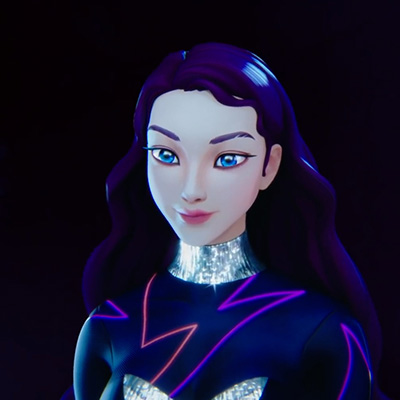
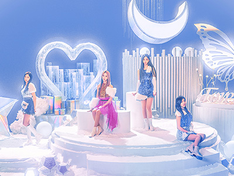

CONTENTS
SMCU(SM Culture Universe)
-
aespa ep1. ‘Black Mamba’ SM Culture Universe
Black Mamba is a villain in aespa’s lore. She is featured in the group’s debut single, Black Mamba. Her character is based off the venomous snake by the same name. In aespa’s music video ‘Black Mamba’, she is shown caressing member Karina’s neck in an ominous way.
 영상보러가기
영상보러가기- aespa ep1. ‘Black Mamba’ SM Culture Universe
- Black Mamba is a villain in aespa’s lore. She is featured in the group’s debut single, Black Mamba. Her character is based off the venomous snake by the same name. In aespa’s music video ‘Black Mamba’, she is shown caressing member Karina’s neck in an ominous way
- aespa Official Youtube
-

#STILL 1
ae-KARINA
-
 #STILL 2
#STILL 2WINTER & KARINA
-
 #STILL 3
#STILL 3NINGNING
-
 #STILL 4
#STILL 4ae-WINTER
-
aespa ‘ep2. Next Level’ SM Culture Universe
'ep1. Black Mamba', KWANGYA is described as an unruled and infinite place located beyond FLAT. The Black Mamba is disrupting the SYNK from here. In 'ep2. Next Level', it is further described as a ruleless, formless, and limitless place where time and space are not defined and everything is constantly changing. It is also where infinite energy and data flow
 영상보러가기
영상보러가기- aespa ‘ep2. Next Level’ SM Culture Universe
- 'ep1. Black Mamba', KWANGYA is described as an unruled and infinite place located beyond FLAT. The Black Mamba is disrupting the SYNK from here. In 'ep2. Next Level', it is further described as a ruleless, formless, and limitless place where time and space are not defined and everything is constantly changing. It is also where infinite energy and data flow
- aespa Official Youtube
-
#STILL 1
ae-WINTER
-
#STILL 2
NINGNING
-
#STILL 3
Blackmamba?
-
#STILL 4
GISELLE
Music Video
-
영상보러가기
Black Mamba
- aespa - Black Mamba
- “Black Mamba” is a powerful dance song with a signature synth sound and a strong bass. It has a catchy hook that resembles the chanting of a spell.
- aespa Official Youtube
-

영상보러가기
Forever
- aespa - Forever
- Forever is the remake of the same name song by Yoo Young Jin as a part of S.M. Entertainment’s holiday album “Winter Vacation in SMTOWN.com” in 2000.
- aespa Official Youtube
-
영상보러가기
Next Level
- aespa - Next Level
- "Next Level" is a hip hop dance song with a groovy rap and energetic bass riff. The lyrics also interestingly tell the story of the worldview, which is about the journey to "KWANGYA" to find "Black Mamba" that interfered with the connection between aespa and the avatars.
- aespa Official Youtube
-
영상보러가기
Savage
- aespa - Savage
- "Savage" is a trap song centered around intense, punchy drums and bass. The song contains a unique and distinctive rap, powerful vocal ad-libs, and an addictive hook. In the song, aespa and the avatars go to KWANGYA to face Black Mamba with the help of nævis.[1] It's telling the next story of aespa’s universe after "Black Mamba" and "Next Level".
- aespa Official Youtube
-
영상보러가기
Life's Too Short
- aespa - Life's Too Short
- "Life's Too Short" is described as a medium-tempo pop genre song. Throughout the song you will be able to hear the hopeful vocals and the guitar riffs. The lyrics talk about enjoying life as desired without having regrets
- aespa Official Youtube
-
영상보러가기
Girls
- aespa - Girls
- "Girls" is described as a dance genre song that features a synth sound that's rough-textured and a strong wobble bass. The lyrics talk about the avatars and aespa fighting in a battle with Black Mamba. A new story emerges with their helper NAVIS
- aespa Official Youtube